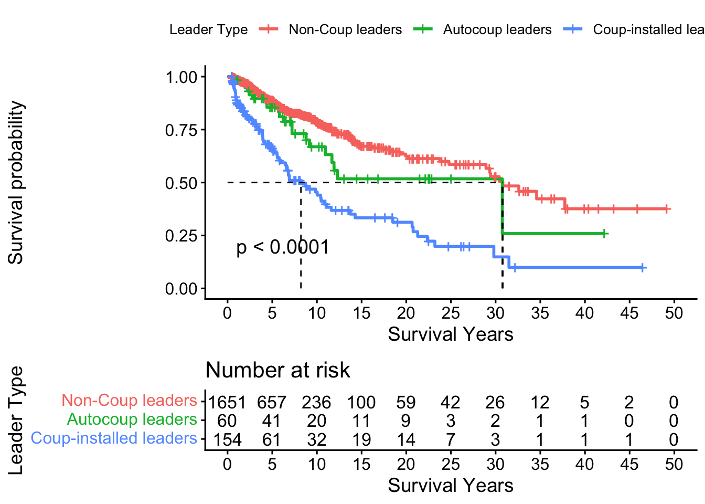
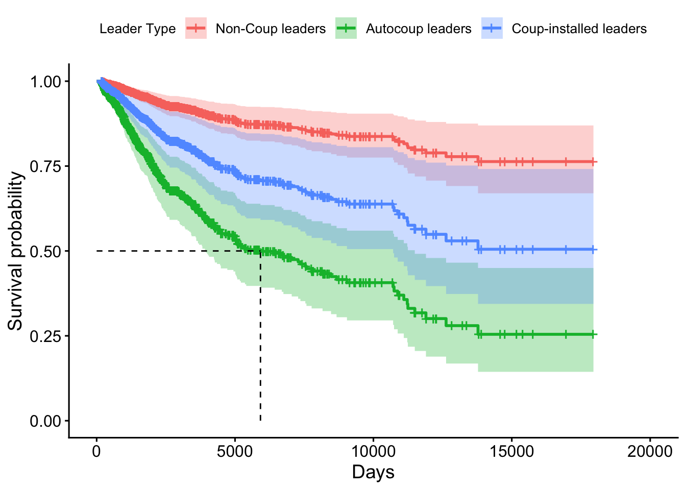
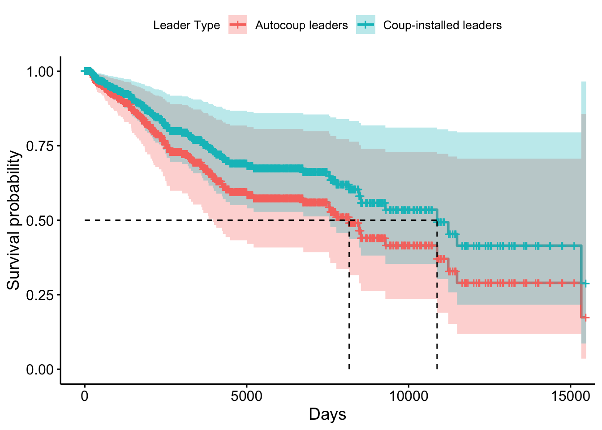
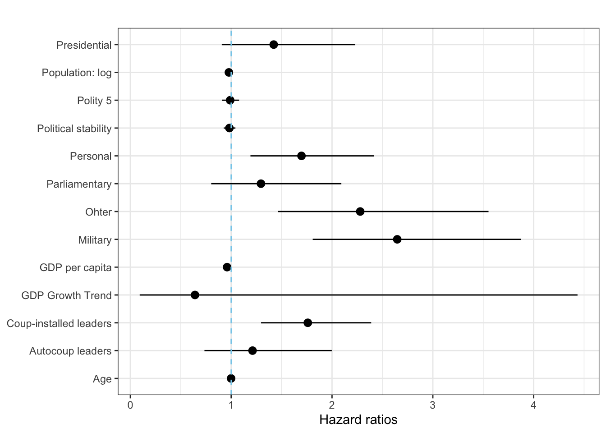
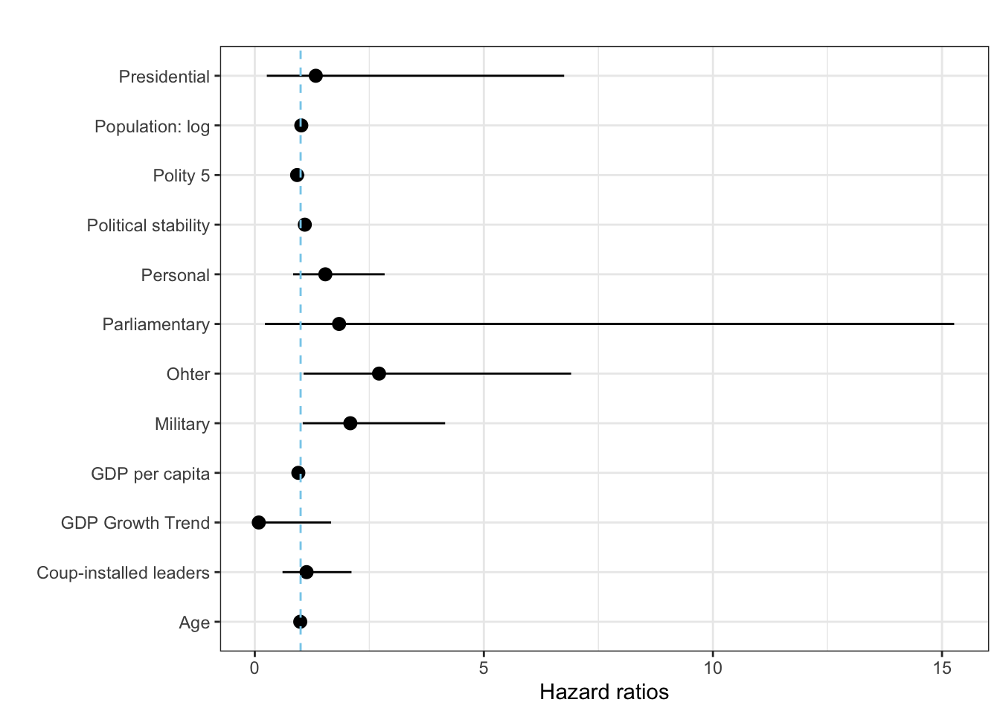
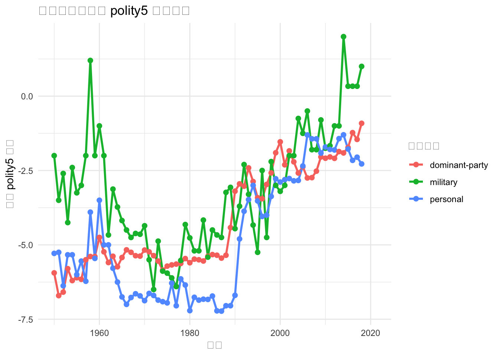

pacman::p_load(tidyverse, janitor, data.table, readxl, vdemdata, zoo, plm, democracyData, fuzzyjoin, survival, stargazer, brglm2, survminer, ggsurvfit, broom)Setup
leaders dataset
Archigos Dataset
# Download Archigos data
archigos_url <- "http://ksgleditsch.com/data/1March_Archigos_4.1.txt"
archigos_raw <- fread(archigos_url, encoding = "Latin-1")
# Clean and process Archigos data
archigos <- archigos_raw |>
mutate(
startdate = ymd(startdate),
enddate = ymd(enddate),
# Correct start dates for specific observations
startdate = case_when(
obsid == "GAB-1964-2" ~ ymd("1960-08-17"),
obsid == "CHA-1990" ~ ymd("1990-12-2"),
obsid == "RUS-2000" ~ ymd("1999-12-31"),
TRUE ~ startdate
),
entry = case_when(
obsid == "GAB-1964-2" ~ "Regular",
TRUE ~ entry
)
) |>
filter(
!obsid %in% c("GAB-1960", "GAB-1964-1"),
startdate != enddate
)
# Save cleaned Archigos data
write_csv(archigos, "archigos_clean.csv")PLAD Dataset
# Download PLAD data
# plad_url <- "https://dataverse.harvard.edu/api/access/datafile/10119324"
# download.file(plad_url, "PLAD.xls")
# Read and process PLAD data
plad_raw <- read_excel("PLAD_April_2024.xls") |>
mutate(
exit = case_when(
exit == "Still in office" ~ "Still in Office",
TRUE ~ exit
)
)
# Save cleaned PLAD data
write_csv(plad_raw, "plad_clean.csv")
plad <- plad_raw |>
select(country, continent, 1:6, entry, exit, gender, yrborn, birthdate) |>
mutate(
startdate = dmy(startdate),
birthdate = dmy(birthdate),
enddate = case_when(
exit == "Still in Office" ~ Sys.Date(),
TRUE ~ dmy(enddate)
),
yrborn = as.numeric(yrborn)
) |>
filter(startdate != enddate)Warning: There were 2 warnings in `mutate()`.
The first warning was:
ℹ In argument: `birthdate = dmy(birthdate)`.
Caused by warning:
! 402 failed to parse.
ℹ Run `dplyr::last_dplyr_warnings()` to see the 1 remaining warning.# Save processed PLAD data for further analysis
write_csv(plad, "plad_processed.csv")Leaders Dataset: Archigos and PLAD
# Combine Archigos and PLAD data
leaders <- archigos |>
full_join(plad, by = join_by(idacr, startdate), suffix = c(".archigos", ".plad")) |>
group_by(idacr) |>
fill(ccode, country, continent, .direction = "downup") |>
ungroup() |>
mutate(
obsid = coalesce(obsid, plad_id),
leader = coalesce(leader.archigos, leader.plad),
enddate = coalesce(enddate.plad, enddate.archigos),
entry = coalesce(entry.plad, entry.archigos),
exit = coalesce(exit.plad, exit.archigos),
enddate = if_else(exit == "Still in Office", Sys.Date(), enddate),
gender = coalesce(gender.archigos, gender.plad),
yrborn = coalesce(yrborn.archigos, as.numeric(yrborn.plad)),
exitcode = case_when(
is.na(exitcode) ~ exit,
exitcode == "Still in Office" & exit != "Still in office" ~ exit,
TRUE ~ exitcode
),
exitcode = case_when(
leader %in% c("Mugabe", "Al-Bashir", "Ibrahim Boubacar Keita", "Win Myint", "Deby", "Conde", "Bah Ndaw", "Roch Marc Christian Kabore", "Paul-Henri Sandaogo Damiba", "Ali Bongo Ondimba", "Mohamed Bazoum") ~ "Coup",
TRUE ~ exitcode
)
) |>
select(1:4, country, continent, leader, startdate, enddate, entry, exit, exitcode, gender, yrborn) |>
arrange(ccode, startdate) |>
filter(year(enddate) > 1940)
# Save combined leaders dataset
write_csv(leaders, "leaders_combined.csv")# Step 1: Filter out leaders with less than 180 days in office
df <- leaders |>
select(-(1:2), -continent) |>
mutate(total_days_in_office = as.numeric(difftime(enddate, startdate, units = "days")))
# |>
# filter(total_days_in_office >= 180) # Remove leaders with less than 180 days in office
# Step 2: Create country-year observations
df_expanded <- df |>
# 1. 计算起始和结束年份，并为每一行生成年份序列的列表
mutate(year = map2(year(startdate), year(enddate), seq)) |>
# 2. 使用 unnest 展开年份列表列，其他所有列会自动保留和复制
unnest(year) |>
# Step 3: Remove leaders who assumed power after June 30 (keep leaders with over 180 days in office)
mutate(
# For each year, calculate the number of days the leader was in office
year_start_date = as.Date(paste(year, "-01-01", sep = "")), # Start of the year
year_end_date = as.Date(paste(year, "-12-31", sep = "")), # End of the year
days_in_office = pmax(0, as.numeric(difftime(pmin(enddate, year_end_date),
pmax(startdate, year_start_date),
units = "days"
)))
) |>
# Only keep leaders with more than 180 days in office
# filter(days_in_office >= 180) |>
# Step 4: Create a cumulative sum of days in office for each leader across years
group_by(country, leader) |>
mutate(cumulative_days_in_office = cumsum(days_in_office)) |>
ungroup() |>
select(-year_start_date, -year_end_date) # Remove unnecessary columns
leader_year <- df_expanded |>
mutate(age = if_else(yrborn > 0, year - yrborn, NA)) |>
select(1:3, year, everything())
# Save the cleaned dataset
write.csv(leader_year, "leader_year.csv", row.names = FALSE)Autocoup analysis dataset
Polity5 Dataset
polity5 <- democracyData::polity5
polity <- polity5 |>
mutate(polity5 = ifelse(polity < -10, NA, polity)) |>
select(ccode = polity_annual_ccode, country = polity_annual_country, year, polity5) |>
group_by(ccode) |>
fill(polity5, .direction = "downup") |>
mutate(
diff1 = polity5 - dplyr::lag(polity5, 1, default = 0), # for event year
diff2 = polity5 - dplyr::lag(polity5, 2, default = 0), # for pre-event year
diff3 = polity5 - dplyr::lag(polity5, 3, default = 0), # for post-event year
diff4 = polity5 - dplyr::lag(polity5, 4, default = 0), # for post-event year
diff5 = polity5 - dplyr::lag(polity5, 5, default = 0) # for post-event year
) |>
ungroup() |>
filter(year >= 1940)Political Violence Dataset: MEPV
# Download MEPV data
# violence_url <- "http://www.systemicpeace.org/inscr/MEPVv2018.xls"
# download.file(violence_url, "political_violence_2018.xls")
political_violence <- read_excel("political_violence_2018.xls") |>
select(ccode, year, violence = actotal)GDP and population Dataset
GDP <- vdem |>
select(ccode = COWcode, country = country_name, year, GDP_pc = e_gdppc, pop = e_pop) |>
filter(year >= 1940) |>
# Create a new variable for 5-year moving average of GDP growth
mutate(
GDP_trend = GDP_pc / lag(rollapply(GDP_pc,
width = 5,
FUN = mean,
align = "right",
fill = NA
)),
.by = c(ccode)
) |>
mutate(pop_log = log(pop)) |>
select(ccode, year, GDP_pc, GDP_trend, pop_log)
# vdemdata::codebook |>
# view()Regime Type Dataset
regimes <- REIGN |>
select(
ccode = GWn,
country = extended_country_name,
year,
regime_type = gwf_regimetype
) |>
distinct(ccode, year, .keep_all = T) |>
mutate(
regime = case_when(
regime_type %in% c(
"party-based",
"party-personal",
"party-military",
"party-personal-military"
) ~ "dominant-party",
regime_type == "personal" ~ "personal",
regime_type %in% c("military", "military personal", "indirect military") ~ "military",
regime_type == "presidential" ~ "presidential",
regime_type == "parliamentary" ~ "parliamentary",
TRUE ~ "other"
),
regime_autocoup = case_when(
regime_type %in% c(
"party-based",
"party-military"
) ~ "dominant-party",
regime_type == "personal" ~ "personal",
regime_type %in% c(
"party-personal",
"party-personal-military",
"military personal"
) ~ "semi-personal",
regime_type %in% c("military", "provisional military", "indirect military") ~ "military",
regime_type == "presidential" ~ "presidential",
regime_type == "parliamentary" ~ "parliamentary",
TRUE ~ "other"
),
regime_three = case_when(
grepl("personal", regime_type) ~ "personal",
regime_type == "presidential" ~ "presidential",
TRUE ~ "other"
)
) |>
select(country, ccode, year, regime, regime_autocoup, regime_three, regime_type)Coup Analysis Dataset
# Download coup data
coup_url <- "https://www.uky.edu/~clthyn2/coup_data/powell_thyne_ccode_year.txt"
coup_raw <- fread(coup_url)
coup_total <- coup_raw |>
mutate(
coup = case_when(
coup1 == 0 ~ 0,
coup4 == 2 | (coup4 == 0 & coup3 == 2) | (coup4 == 0 & coup3 == 0 & coup2 == 2) | (coup4 == 0 & coup3 == 0 & coup2 == 0 & coup1 == 2) ~ 2,
TRUE ~ 1
)
) |>
select(1:4, coup)coup_all <- fread(coup_url) |>
mutate(
coup = case_when(
coup1 == 0 ~ 0,
coup1 == 2 | coup2 == 2 | coup3 == 2 | coup4 == 2 ~ 2,
TRUE ~ 1
)
) |>
group_by(ccode) |>
arrange(year) |>
mutate(
pre_coups = lag(cumsum(coup %in% c(1, 2)), default = 0),
last_coup_year = lag(case_when(
coup %in% c(1, 2) ~ year,
TRUE ~ NA_integer_
)),
last_coup_year = case_when(
year == min(year) ~ year,
TRUE ~ last_coup_year
)
) |>
fill(last_coup_year, .direction = "down") |>
mutate(
time_since_last_coup = year - last_coup_year,
coup_dummy = case_when(
pre_coups == 0 ~ 0,
TRUE ~ 1
)
) |>
select(ccode, year, coup, pre_coups, time_since_last_coup, coup_dummy)
write.csv(coup_raw, "coup_raw.csv")
write.csv(coup_total, "coup_total.csv")
write.csv(coup_all, "coup_all.csv")Coup Analysis Model
coup_model <- regimes |>
# filter(regime_coup != "other") |>
left_join(coup_all, by = join_by(ccode, year)) |>
left_join(political_violence, by = join_by(ccode, year)) |>
left_join(GDP, by = join_by(ccode, year)) |>
mutate(violence = na.locf(violence, .by = ccode, na.rm = FALSE)) |>
mutate(
regime = fct_relevel(regime, "dominant-party"),
ect = (GDP_trend - 1) * 100
) |>
filter(year > 1949) |>
select(ccode, country, year, coup, regime, GDP_trend = ect, GDP_pc, violence, pre_coups, coup_dummy, time_since_last_coup)
# Save the coup analysis model
write_csv(coup_model, "coup_model.csv")Autocoup analysis Dataset
Autocoup Dataset
# Read autocoup data
autocoup_raw <- read_excel("Autocoup.xlsx", na = "Incumbent") |>
mutate(
exit_date = replace_na(exit_date, Sys.Date()),
across(everything(), str_to_sentence)
)
autocoup <- autocoup_raw |>
select(1:14) |>
mutate(
ccode = as.integer(ccode),
entry_date = as.Date(entry_date),
exit_date = as.Date(exit_date),
extending_date = make_date(year = extending_date, month = month(entry_date), day = day(entry_date)),
autocoup_date = as.integer(autocoup_date)
)
# Save cleaned autocoup data
write_csv(autocoup, "autocoup_clean.csv")Leader_autocoup Dataset
# Join leader_year and autocoup data
leader_autocoup1 <- leader_year |>
left_join(
autocoup |>
select(ccode, leader_name, autocoup_date, autocoup_outcome, extending_date) |>
mutate(year = autocoup_date),
by = join_by(ccode, year)
) |>
filter(days_in_office > 180) |>
mutate(
autocoup_attempt = if_else(is.na(leader_name), 0, 1),
autocoup_success = if_else(!is.na(extending_date), 1, if_else(!is.na(autocoup_attempt), 0, NA))
) |>
select(1:5, leader_name, everything())Autocoup Analysis Model
autocoup_model <- leader_autocoup1 |>
left_join(
regimes |>
select(-country),
by = join_by(ccode, year)
) |>
left_join(political_violence,
by = join_by(ccode, year)
) |>
mutate(
autocoup_outcome = case_when(
autocoup_outcome == "Yes" ~ 2,
autocoup_outcome == "No" ~ 1,
TRUE ~ 0
)
) |>
left_join(GDP, by = join_by(ccode, year)) |>
left_join(
polity |>
select(-country),
by = join_by(ccode, year)
) |>
group_by(ccode) |>
fill(regime, .direction = "downup") |>
ungroup() |>
filter(
year > 1944
) |>
mutate(cold_war = ifelse(year > 1990, 0, 1))
write_csv(autocoup_model, "autocoup_model.csv")# autocoup_model
attempt1 <- autocoup_model |>
mutate(regime = factor(regime,
levels = c("dominant-party", "personal", "presidential", "military", "parliamentary", "other")
)) |>
glm(
autocoup_attempt ~ regime + GDP_pc + GDP_trend + pop_log + violence + polity5 + log(cumulative_days_in_office) + factor(cold_war),
family = binomial,
data = _
)
attempt1 |>
summary()
Call:
glm(formula = autocoup_attempt ~ regime + GDP_pc + GDP_trend +
pop_log + violence + polity5 + log(cumulative_days_in_office) +
factor(cold_war), family = binomial, data = mutate(autocoup_model,
regime = factor(regime, levels = c("dominant-party", "personal",
"presidential", "military", "parliamentary", "other"))))
Coefficients:
Estimate Std. Error z value Pr(>|z|)
(Intercept) -4.690847 1.859276 -2.523 0.011638 *
regimepersonal 0.743033 0.310043 2.397 0.016550 *
regimepresidential 1.609931 0.482775 3.335 0.000854 ***
regimemilitary -0.803930 0.752558 -1.068 0.285402
regimeparliamentary -1.707900 1.114027 -1.533 0.125255
regimeother -1.175070 0.641217 -1.833 0.066867 .
GDP_pc -0.013301 0.008350 -1.593 0.111171
GDP_trend 0.922759 1.393337 0.662 0.507801
pop_log -0.141978 0.092594 -1.533 0.125194
violence 0.012005 0.068269 0.176 0.860412
polity5 -0.089127 0.033386 -2.670 0.007594 **
log(cumulative_days_in_office) 0.009163 0.126874 0.072 0.942424
factor(cold_war)1 -0.792116 0.268956 -2.945 0.003228 **
---
Signif. codes: 0 '***' 0.001 '**' 0.01 '*' 0.05 '.' 0.1 ' ' 1
(Dispersion parameter for binomial family taken to be 1)
Null deviance: 902.26 on 9363 degrees of freedom
Residual deviance: 818.26 on 9351 degrees of freedom
(2276 observations deleted due to missingness)
AIC: 844.26
Number of Fisher Scoring iterations: 10attempt2 <- autocoup_model |>
mutate(regime = factor(regime,
levels = c("dominant-party", "personal", "presidential", "military", "parliamentary", "other")
)) |>
glm(
autocoup_attempt ~ regime + GDP_pc + GDP_trend + pop_log + violence + polity5 + log(cumulative_days_in_office) + factor(cold_war),
family = binomial(link = "logit"),
method = "brglmFit",
data = _
)
summary(attempt2)
Call:
glm(formula = autocoup_attempt ~ regime + GDP_pc + GDP_trend +
pop_log + violence + polity5 + log(cumulative_days_in_office) +
factor(cold_war), family = binomial(link = "logit"), data = mutate(autocoup_model,
regime = factor(regime, levels = c("dominant-party", "personal",
"presidential", "military", "parliamentary", "other"))),
method = "brglmFit")
Deviance Residuals:
Min 1Q Median 3Q Max
-0.4219 -0.1635 -0.1100 -0.0488 3.6196
Coefficients:
Estimate Std. Error z value Pr(>|z|)
(Intercept) -4.637038 1.774396 -2.613 0.008967 **
regimepersonal 0.735705 0.300138 2.451 0.014237 *
regimepresidential 1.581645 0.465383 3.399 0.000677 ***
regimemilitary -0.621480 0.668639 -0.929 0.352645
regimeparliamentary -1.355854 0.924392 -1.467 0.142444
regimeother -1.038108 0.581679 -1.785 0.074314 .
GDP_pc -0.011324 0.007517 -1.506 0.131956
GDP_trend 0.980149 1.326303 0.739 0.459902
pop_log -0.146618 0.088335 -1.660 0.096957 .
violence 0.024714 0.064049 0.386 0.699604
polity5 -0.089180 0.031970 -2.789 0.005279 **
log(cumulative_days_in_office) 0.003588 0.121670 0.029 0.976472
factor(cold_war)1 -0.791387 0.257946 -3.068 0.002155 **
---
Signif. codes: 0 '***' 0.001 '**' 0.01 '*' 0.05 '.' 0.1 ' ' 1
(Dispersion parameter for binomial family taken to be 1)
Null deviance: 902.27 on 9363 degrees of freedom
Residual deviance: 819.19 on 9351 degrees of freedom
(2276 observations deleted due to missingness)
AIC: 845.19
Type of estimator: AS_mixed (mixed bias-reducing adjusted score equations)
Number of Fisher Scoring iterations: 6stargazer(attempt1, attempt2,
warning = FALSE,
header = FALSE,
type = "text"
)
===========================================================
Dependent variable:
----------------------------
autocoup_attempt
(1) (2)
-----------------------------------------------------------
regimepersonal 0.743** 0.736**
(0.310) (0.300)
regimepresidential 1.610*** 1.582***
(0.483) (0.465)
regimemilitary -0.804 -0.621
(0.753) (0.669)
regimeparliamentary -1.708 -1.356
(1.114) (0.924)
regimeother -1.175* -1.038*
(0.641) (0.582)
GDP_pc -0.013 -0.011
(0.008) (0.008)
GDP_trend 0.923 0.980
(1.393) (1.326)
pop_log -0.142 -0.147*
(0.093) (0.088)
violence 0.012 0.025
(0.068) (0.064)
polity5 -0.089*** -0.089***
(0.033) (0.032)
log(cumulative_days_in_office) 0.009 0.004
(0.127) (0.122)
factor(cold_war)1 -0.792*** -0.791***
(0.269) (0.258)
Constant -4.691** -4.637***
(1.859) (1.774)
-----------------------------------------------------------
Observations 9,364 9,364
Log Likelihood -409.131 -409.594
Akaike Inf. Crit. 844.262 845.188
===========================================================
Note: *p<0.1; **p<0.05; ***p<0.01
=====
FALSE
-----Survival Analysis Dataset
# Join leader_year and autocoup data
leader_autocoup2 <- leader_year |>
left_join(
autocoup |>
select(ccode, leader_name, autocoup_date, autocoup_outcome, extending_date) |>
mutate(year = autocoup_date),
by = join_by(ccode, year)
) |>
# filter(days_in_office > 180) |>
mutate(
autocoup_attempt = if_else(is.na(leader_name), 0, 1),
autocoup_success = if_else(!is.na(extending_date), 1, if_else(!is.na(autocoup_attempt), 0, NA))
) |>
select(1:5, leader_name, everything())coup_success <- fread("https://www.uky.edu/~clthyn2/coup_data/powell_thyne_coups_final.txt") |>
mutate(coup_date = make_date(year = year, month = month, day = day)) |>
select(ccode, country, coup_date, coup, year) |>
filter(coup == 2)
leader_coup_autocoup <- leader_autocoup2 |>
left_join(
coup_success |>
select(ccode, year, coup_date),
by = join_by(ccode, year)
) |>
select(1:6, coup_date, everything()) |>
group_by(ccode, coup_date) |>
slice_min(order_by = abs(as.numeric(coup_date - startdate)), n = 1, with_ties = T) |>
ungroup() |>
mutate(
coup_to_office = abs(as.numeric(coup_date - startdate)),
coup_to_office = ifelse(is.na(coup_to_office), 0, coup_to_office),
) |>
filter(
total_days_in_office > 180,
coup_to_office < 170,
!(leader == "Caldera Rodriguez" & leader_name == "Chavez")
) |>
mutate(
group = case_when(
autocoup_success == 1 ~ "B",
!is.na(coup_date) ~ "C",
TRUE ~ "A"
),
status = case_when(
exit %in% c("Assassination", "Foreign", "Irregular", "Suicide") ~ 1,
TRUE ~ 0
),
startdate = coalesce(extending_date, startdate),
survival_days = as.numeric(enddate - startdate),
tstart = as.numeric(year(startdate) + (startdate - floor_date(startdate, "year")) / 365),
tstop = as.numeric(year(enddate) + (enddate - floor_date(enddate, "year")) / 365)
) |>
select(ccode, country, year, leader, startdate, enddate, tstart, tstop, status, group, survival_days, age)Warning in left_join(leader_autocoup2, select(coup_success, ccode, year, : Detected an unexpected many-to-many relationship between `x` and `y`.
ℹ Row 399 of `x` matches multiple rows in `y`.
ℹ Row 1 of `y` matches multiple rows in `x`.
ℹ If a many-to-many relationship is expected, set `relationship =
"many-to-many"` to silence this warning.coup_autocoup_data <- leader_coup_autocoup |>
left_join(
regimes |>
select(-country),
by = join_by(ccode, year)
) |>
left_join(political_violence,
by = join_by(ccode, year)
) |>
left_join(GDP, by = join_by(ccode, year)) |>
left_join(
polity |>
select(-country),
by = join_by(ccode, year)
) |>
group_by(ccode) |>
fill(regime, .direction = "downup") |>
ungroup() |>
filter(
year > 1944
) |>
mutate(cold_war = ifelse(year > 1990, 0, 1))survival_data <- coup_autocoup_data |>
filter(
# !(ccode == "500" & leader == "Okello"),
# !(enddate == "2019-02-03" & leader == "Azali Assoumani"),
# !(startdate == "1967-08-17" & leader == "Bongo"),
!(ccode == "698" & leader == "Qabus Bin Said"),
survival_days > 180
) |>
# mutate(enddate = ifelse(leader == "Azali Assoumani", Sys.Date(), ymd(enddate))) |>
group_by(ccode) |>
# 向下填充 categorical 或 ordinal 变量
tidyr::fill(regime, polity5, violence, .direction = "updown") |>
# 处理 GDP 相关变量
mutate(
GDP_pc = ifelse(
is.na(GDP_pc),
zoo::rollapply(GDP_pc, width = 3, FUN = mean, align = "right", fill = NA, na.rm = TRUE),
GDP_pc
),
GDP_trend = ifelse(
is.na(GDP_trend),
zoo::rollapply(GDP_trend, width = 3, FUN = mean, align = "right", fill = NA, na.rm = TRUE),
GDP_trend
),
pop_log = ifelse(
is.na(pop_log),
zoo::rollapply(pop_log, width = 3, FUN = mean, align = "right", fill = NA, na.rm = TRUE),
pop_log
)
) |>
ungroup() |>
distinct(ccode, leader, startdate, enddate,
.keep_all = TRUE) |>
filter(regime_type != "monarchy") survival_cox_ph <- survival_data |>
mutate(
survival_year = survival_days / 365,
regime = factor(regime,
levels = c("dominant-party", "military", "personal", "presidential", "parliamentary", "other")
)
)
# Save the survival Cox PH model
write_csv(survival_cox_ph, "survival_cox_ph_model.csv")survival_cox_td1 <- survival_data |>
select(ccode, country, year, leader, startdate, enddate, tstart, tstop, status, group, survival_days, age) |>
mutate(first_year = startdate, last_year = enddate) |>
survSplit(Surv(year(startdate), year(enddate), status) ~ ., data = _, cut = 1946:2026, id = "id") |>
mutate(tstart = if_else(is.na(tstart), tstop, tstart)) |>
mutate(
T1 = 0,
T2 = ifelse(row_number() == 1, ceiling_date(first_year, "year") - first_year, 0),
T2 = first(T2) + 365 * (row_number() - 1),
T1 = dplyr::lag(T2, default = 0),
T2 = ifelse(row_number() == n(), survival_days, T2),
age = age + row_number() - 1,
.by = id
)Warning in Surv(year(startdate), year(enddate), status): Stop time must be >
start time, NA createdsurvival_cox_td <- survival_cox_td1 |>
left_join(
regimes |> select(ccode, year, regime),
by = join_by(ccode, tstart == year)
) |>
left_join(
political_violence,
by = join_by(ccode, tstart == year)
) |>
left_join(
GDP |> select(ccode, year, GDP_pc, GDP_trend, pop_log),
by = join_by(ccode, tstart == year)
) |>
left_join(
polity |> select(ccode, year, polity5),
by = join_by(ccode, tstart == year)
) |>
arrange(ccode, tstart) |>
group_by(ccode) |>
# 向下填充 categorical 或 ordinal 变量
tidyr::fill(regime, polity5, violence, .direction = "updown") |>
# 处理 GDP 相关变量
mutate(
GDP_pc = ifelse(
is.na(GDP_pc),
zoo::rollapply(GDP_pc, width = 3, FUN = mean, align = "right", fill = NA, na.rm = TRUE),
GDP_pc
),
GDP_trend = ifelse(
is.na(GDP_trend),
zoo::rollapply(GDP_trend, width = 3, FUN = mean, align = "right", fill = NA, na.rm = TRUE),
GDP_trend
),
pop_log = ifelse(
is.na(pop_log),
zoo::rollapply(pop_log, width = 3, FUN = mean, align = "right", fill = NA, na.rm = TRUE),
pop_log
)
) |>
ungroup() |>
select(id, everything()) |>
mutate(regime = factor(regime,
levels = c("dominant-party", "military", "personal", "presidential", "parliamentary", "other")
))
# Save the survival Cox TD model
write_csv(survival_cox_td, "survival_cox_td_model.csv")
# survival_cox_td |>
# tabyl(regime, group)
# survival_cox_ph |>
# tabyl(regime, group)Running Survival Models
https://stats.oarc.ucla.edu/r/seminars/introduction-to-survival-analysis-in-r/ https://stats.oarc.ucla.edu/wp-content/uploads/2025/02/survival_r_full.html https://stats.oarc.ucla.edu/wp-content/uploads/2025/02/intro_survival_r_code.r https://stats.oarc.ucla.edu/wp-content/uploads/2025/02/survival_r_slides.html#/references
model_cox1 <- survival_cox_ph |>
mutate(group = factor(group, labels = c("Non-Coup leaders", "Autocoup leaders", "Coup-installed leaders"))) |>
coxph(Surv(survival_days, status) ~ group + regime + GDP_trend + GDP_pc + polity5 + age + pop_log + violence, data = _)
model_cox1 |>
summary()Call:
coxph(formula = Surv(survival_days, status) ~ group + regime +
GDP_trend + GDP_pc + polity5 + age + pop_log + violence,
data = mutate(survival_cox_ph, group = factor(group, labels = c("Non-Coup leaders",
"Autocoup leaders", "Coup-installed leaders"))))
n= 1714, number of events= 290
(151 observations deleted due to missingness)
coef exp(coef) se(coef) z Pr(>|z|)
groupAutocoup leaders 0.1916537 1.2112510 0.2551433 0.751 0.452556
groupCoup-installed leaders 0.5649796 1.7594120 0.1558741 3.625 0.000289
regimemilitary 0.9728612 2.6455028 0.1942951 5.007 5.52e-07
regimepersonal 0.5289621 1.6971698 0.1807083 2.927 0.003421
regimepresidential 0.3512816 1.4208875 0.2294635 1.531 0.125798
regimeparliamentary 0.2585969 1.2951117 0.2446895 1.057 0.290586
regimeother 0.8234498 2.2783461 0.2263337 3.638 0.000275
GDP_trend -0.4514292 0.6367175 0.9872604 -0.457 0.647488
GDP_pc -0.0415054 0.9593441 0.0075380 -5.506 3.67e-08
polity5 -0.0231146 0.9771505 0.0136725 -1.691 0.090916
age -0.0007692 0.9992311 0.0061844 -0.124 0.901013
pop_log -0.0099639 0.9900855 0.0437030 -0.228 0.819652
violence -0.0179039 0.9822554 0.0301254 -0.594 0.552304
groupAutocoup leaders
groupCoup-installed leaders ***
regimemilitary ***
regimepersonal **
regimepresidential
regimeparliamentary
regimeother ***
GDP_trend
GDP_pc ***
polity5 .
age
pop_log
violence
---
Signif. codes: 0 '***' 0.001 '**' 0.01 '*' 0.05 '.' 0.1 ' ' 1
exp(coef) exp(-coef) lower .95 upper .95
groupAutocoup leaders 1.2113 0.8256 0.73461 1.9972
groupCoup-installed leaders 1.7594 0.5684 1.29625 2.3881
regimemilitary 2.6455 0.3780 1.80769 3.8716
regimepersonal 1.6972 0.5892 1.19098 2.4185
regimepresidential 1.4209 0.7038 0.90623 2.2278
regimeparliamentary 1.2951 0.7721 0.80173 2.0921
regimeother 2.2783 0.4389 1.46206 3.5504
GDP_trend 0.6367 1.5706 0.09196 4.4086
GDP_pc 0.9593 1.0424 0.94527 0.9736
polity5 0.9772 1.0234 0.95131 1.0037
age 0.9992 1.0008 0.98719 1.0114
pop_log 0.9901 1.0100 0.90881 1.0786
violence 0.9823 1.0181 0.92594 1.0420
Concordance= 0.745 (se = 0.016 )
Likelihood ratio test= 188.5 on 13 df, p=<2e-16
Wald test = 143.5 on 13 df, p=<2e-16
Score (logrank) test = 185.8 on 13 df, p=<2e-16model_cox2 <- survival_cox_td |>
mutate(group = factor(group, labels = c("Non-Coup leaders", "Autocoup leaders", "Coup-installed leaders"))) |>
coxph(Surv(T1, T2, status) ~ group + regime + GDP_trend + GDP_pc + polity5 + age + pop_log + violence + cluster(id), data = _)
model_cox2 |>
summary()Call:
coxph(formula = Surv(T1, T2, status) ~ group + regime + GDP_trend +
GDP_pc + polity5 + age + pop_log + violence, data = mutate(survival_cox_td,
group = factor(group, labels = c("Non-Coup leaders", "Autocoup leaders",
"Coup-installed leaders"))), cluster = id)
n= 9538, number of events= 291
(957 observations deleted due to missingness)
coef exp(coef) se(coef) robust se z
groupAutocoup leaders 0.255778 1.291466 0.253683 0.254905 1.003
groupCoup-installed leaders 0.208935 1.232364 0.172151 0.184854 1.130
regimemilitary 1.165433 3.207311 0.213868 0.227228 5.129
regimepersonal 0.576027 1.778956 0.174986 0.181236 3.178
regimepresidential 0.290798 1.337494 0.270639 0.301488 0.965
regimeparliamentary 0.256176 1.291980 0.292837 0.339695 0.754
regimeother 0.772254 2.164640 0.303941 0.306039 2.523
GDP_trend -2.033665 0.130855 0.783622 0.690929 -2.943
GDP_pc -0.037291 0.963395 0.006613 0.007218 -5.166
polity5 -0.008784 0.991255 0.015542 0.017496 -0.502
age -0.005430 0.994585 0.006323 0.006580 -0.825
pop_log -0.036468 0.964189 0.044557 0.042546 -0.857
violence 0.059760 1.061581 0.026845 0.027837 2.147
Pr(>|z|)
groupAutocoup leaders 0.31566
groupCoup-installed leaders 0.25836
regimemilitary 2.91e-07 ***
regimepersonal 0.00148 **
regimepresidential 0.33477
regimeparliamentary 0.45077
regimeother 0.01162 *
GDP_trend 0.00325 **
GDP_pc 2.39e-07 ***
polity5 0.61564
age 0.40925
pop_log 0.39138
violence 0.03181 *
---
Signif. codes: 0 '***' 0.001 '**' 0.01 '*' 0.05 '.' 0.1 ' ' 1
exp(coef) exp(-coef) lower .95 upper .95
groupAutocoup leaders 1.2915 0.7743 0.78362 2.1284
groupCoup-installed leaders 1.2324 0.8114 0.85781 1.7705
regimemilitary 3.2073 0.3118 2.05459 5.0068
regimepersonal 1.7790 0.5621 1.24709 2.5377
regimepresidential 1.3375 0.7477 0.74074 2.4150
regimeparliamentary 1.2920 0.7740 0.66391 2.5142
regimeother 2.1646 0.4620 1.18819 3.9435
GDP_trend 0.1309 7.6420 0.03378 0.5069
GDP_pc 0.9634 1.0380 0.94986 0.9771
polity5 0.9913 1.0088 0.95784 1.0258
age 0.9946 1.0054 0.98184 1.0075
pop_log 0.9642 1.0371 0.88705 1.0480
violence 1.0616 0.9420 1.00521 1.1211
Concordance= 0.753 (se = 0.015 )
Likelihood ratio test= 208.4 on 13 df, p=<2e-16
Wald test = 184.1 on 13 df, p=<2e-16
Score (logrank) test = 221.8 on 13 df, p=<2e-16, Robust = 165.2 p=<2e-16
(Note: the likelihood ratio and score tests assume independence of
observations within a cluster, the Wald and robust score tests do not).fit <- survfit(Surv(survival_year, status) ~ group,
data = survival_cox_ph |>
select(status, group, survival_year)
)
# Create log-rank plot (Kaplan-Meier plot)
ggsurvplot(fit,
data = survival_cox_ph,
risk.table = TRUE,
risk.table.height = 0.3,
pval = TRUE,
surv.median.line = "hv",
break.x.by = 5,
legend.title = "Leader Type",
legend.labs = c("Non-Coup leaders", "Autocoup leaders", "Coup-installed leaders"),
xlab = "Survival Years",
# title = "Survival Curves of overstay and coup-installed leaders",
font.title = 12
)Warning: Using `size` aesthetic for lines was deprecated in ggplot2 3.4.0.
ℹ Please use `linewidth` instead.
ℹ The deprecated feature was likely used in the ggpubr package.
Please report the issue at <https://github.com/kassambara/ggpubr/issues>.Ignoring unknown labels:
• colour : "Leader Type"
Survival curves for Cox Model


Hazard ratios and 95% CIs for Leader Ousting


Running Free_index Models
Free_index data
decay_factor <- 0.5
coup_autocoup <- coup_total |>
mutate(
coup_attemp = ifelse(coup == 0, 0, 1),
coup_succeed = ifelse(coup == 2, 1, 0)
) |>
left_join(autocoup |>
select(ccode, year = autocoup_date, autocoup = autocoup_outcome)) |>
mutate(
autocoup = case_when(
autocoup == "Yes" ~ 2,
autocoup == "No" ~ 1,
TRUE ~ 0
),
autocoup_attemp = ifelse(autocoup == 0, 0, 1),
autocoup_succeed = ifelse(autocoup == 2, 1, 0)
) |>
left_join(
polity |> select(-country),
# by = join_by(ccode, year)
) |>
left_join(GDP) |>
left_join(political_violence) |>
left_join(regimes |> select(2:3, regime)) |>
group_by(ccode) |>
mutate(
# polity_diff = dplyr::lead(polity5, 3) - polity5,
cold_war = ifelse(year > 1990, 0, 1),
coup_attemp_lead1 = dplyr::lead(coup_attemp, 1, default = 0),
coup_attemp_lag2 = dplyr::lag(coup_attemp, 2, default = 0),
coup_succeed_lag2 = dplyr::lag(coup_succeed, 2, default = 0),
coup_attemp_lag3 = dplyr::lag(coup_attemp, 3, default = 0),
coup_succeed_lag3 = dplyr::lag(coup_succeed, 3, default = 0),
autocoup_attemp_lead1 = dplyr::lead(autocoup_attemp, 1, default = 0),
autocoup_attemp_lag2 = dplyr::lag(autocoup_attemp, 2, default = 0),
autocoup_succeed_lag2 = dplyr::lag(autocoup_succeed, 2, default = 0),
autocoup_attemp_lag3 = dplyr::lag(autocoup_attemp, 3, default = 0),
autocoup_succeed_lag3 = dplyr::lag(autocoup_succeed, 3, default = 0),
non_democracy = ifelse(regime %in% c("presidential", "parliamentary"), 0, 1),
coup_effect = coup_attemp + dplyr::lag(coup_attemp, 1, default = 0) * decay_factor + dplyr::lag(coup_attemp, 2, default = 0) * decay_factor^2 +
dplyr::lag(coup_attemp, 3, default = 0) * decay_factor^3 + dplyr::lag(coup_attemp, 4, default = 0) * decay_factor^4,
coup_seffect = coup_succeed + dplyr::lag(coup_succeed, 1, default = 0) * decay_factor + dplyr::lag(coup_succeed, 2, default = 0) * decay_factor^2 +
dplyr::lag(coup_succeed, 3, default = 0) * decay_factor^3 + dplyr::lag(coup_succeed, 4, default = 0) * decay_factor^4,
autocoup_effect = autocoup_attemp + dplyr::lag(autocoup_attemp, 1, default = 0) * decay_factor + dplyr::lag(autocoup_attemp, 2, default = 0) * decay_factor^2 +
dplyr::lag(autocoup_attemp, 3, default = 0) * decay_factor^3 + dplyr::lag(autocoup_attemp, 4, default = 0) * decay_factor^4,
autocoup_seffect = autocoup_succeed + dplyr::lag(autocoup_succeed, 1, default = 0) * decay_factor + dplyr::lag(autocoup_succeed, 2, default = 0) * decay_factor^2 +
dplyr::lag(autocoup_succeed, 3, default = 0) * decay_factor^3 + dplyr::lag(autocoup_succeed, 4, default = 0) * decay_factor^4,
coup_effect_lag2 = dplyr::lag(coup_effect, 2, default = 0),
coup_effect_lag3 = dplyr::lag(coup_effect, 3, default = 0),
coup_seffect_lag1 = dplyr::lag(coup_seffect, 1, default = 0),
coup_seffect_lag2 = dplyr::lag(coup_seffect, 2, default = 0),
coup_seffect_lag3 = dplyr::lag(coup_seffect, 3, default = 0),
coup_seffect_lag4 = dplyr::lag(coup_seffect, 4, default = 0),
coup_seffect_lag5 = dplyr::lag(coup_seffect, 5, default = 0),
autocoup_effect_lag2 = dplyr::lag(autocoup_effect, 2, default = 0),
autocoup_effect_lag3 = dplyr::lag(autocoup_effect, 3, default = 0),
autocoup_seffect_lag1 = dplyr::lag(autocoup_seffect, 1, default = 0),
autocoup_seffect_lag2 = dplyr::lag(autocoup_seffect, 2, default = 0),
autocoup_seffect_lag3 = dplyr::lag(autocoup_seffect, 3, default = 0),
autocoup_seffect_lag4 = dplyr::lag(autocoup_seffect, 4, default = 0),
autocoup_seffect_lag5 = dplyr::lag(autocoup_seffect, 5, default = 0),
) |>
ungroup() |>
distinct(ccode, year, .keep_all = TRUE)Joining with `by = join_by(ccode, year)`
Joining with `by = join_by(ccode, year)`
Joining with `by = join_by(ccode, year)`
Joining with `by = join_by(ccode, year)`
Joining with `by = join_by(ccode, year)`# Save democraitzation model
write_csv(coup_autocoup, "coup_autocoup.csv")
# coup_autocoup |>
# select(ccode, country, year, coup, coup_attemp, coup_effect,coup_attemp_lead1, coup_effect_lag3) |>
# view()Fixed effect model
R2 0.060 0.033 0.068 0.033
Adjusted R2 0.041 0.014 0.049 0.014
F Statistic 47.043*** 25.244*** 53.742*** 25.364***
======================================================================= Note: p<0.1; p<0.05; p<0.01
coup_autocoup <- coup_autocoup |>
mutate(
GDP_pc = dplyr::lag(GDP_pc, 1),
GDP_trend = dplyr::lag(GDP_trend, 1),
pop_log = dplyr::lag(pop_log, 1),
violence = dplyr::lag(violence, 1),
.by = ccode
)
demo_model0 <- coup_autocoup |>
rename(Attempt = diff1, Autocoup = autocoup_attemp, Coup = coup_attemp) |>
plm(
Attempt ~ Autocoup + Coup + GDP_pc + GDP_trend + pop_log + violence + factor(non_democracy) + factor(cold_war),
index = c("ccode", "year"),
model = "within", # fixed effect
effect = "individual",
data = _
)
demo_model0 |>
summary()Oneway (individual) effect Within Model
Call: plm(formula = Attempt ~ Autocoup + Coup + GDP_pc + GDP_trend + pop_log + violence + factor(non_democracy) + factor(cold_war), data = rename(coup_autocoup, Attempt = diff1, Autocoup = autocoup_attemp, Coup = coup_attemp), effect = “individual”, model = “within”, index = c(“ccode”, “year”))
Unbalanced Panel: n = 169, T = 3-69, N = 9104
Residuals: Min. 1st Qu. Median 3rd Qu. Max. -14.690185 -0.303730 -0.068640 0.092658 17.204872
Coefficients: Estimate Std. Error t-value Pr(>|t|)
Autocoup -1.2761667 0.2007745 -6.3562 2.169e-10 Coup -1.3124337 0.0912352 -14.3852 < 2.2e-16 GDP_pc -0.0034701 0.0013495 -2.5714 0.0101448 *
GDP_trend -0.4280986 0.2767931 -1.5466 0.1219861
pop_log 0.1780742 0.0704096 2.5291 0.0114520 *
violence 0.0150339 0.0139954 1.0742 0.2827616
factor(non_democracy)1 0.8093349 0.0624618 12.9573 < 2.2e-16 factor(cold_war)1 -0.2346913 0.0627910 -3.7377 0.0001869 — Signif. codes: 0 ‘’ 0.001 ’’ 0.01 ’’ 0.05 ‘.’ 0.1 ’ ’ 1
Total Sum of Squares: 26328 Residual Sum of Squares: 25082 R-Squared: 0.047329 Adj. R-Squared: 0.028546 F-statistic: 55.4364 on 8 and 8927 DF, p-value: < 2.22e-16
demo_model1 <- coup_autocoup |>
rename(Attempt = diff3, Autocoup = autocoup_effect_lag3, Coup = coup_effect_lag3) |>
plm(
Attempt ~ Autocoup + Coup + GDP_pc + GDP_trend + pop_log + violence + factor(non_democracy) + factor(cold_war),
index = c("ccode", "year"),
model = "within", # fixed effect
effect = "individual",
data = _
)
demo_model1 |>
summary()Oneway (individual) effect Within Model
Call: plm(formula = Attempt ~ Autocoup + Coup + GDP_pc + GDP_trend + pop_log + violence + factor(non_democracy) + factor(cold_war), data = rename(coup_autocoup, Attempt = diff3, Autocoup = autocoup_effect_lag3, Coup = coup_effect_lag3), effect = “individual”, model = “within”, index = c(“ccode”, “year”))
Unbalanced Panel: n = 169, T = 3-69, N = 9104
Residuals: Min. 1st Qu. Median 3rd Qu. Max. -16.966160 -0.572847 -0.084047 0.320592 17.667668
Coefficients: Estimate Std. Error t-value Pr(>|t|)
Autocoup -0.3382475 0.3215862 -1.0518 0.2929
Coup 1.2028467 0.1269884 9.4721 < 2.2e-16 GDP_pc -0.0094586 0.0023414 -4.0397 5.397e-05 GDP_trend -0.5629137 0.4803856 -1.1718 0.2413
pop_log 0.7550592 0.1219893 6.1896 6.299e-10 violence 0.0329474 0.0242827 1.3568 0.1749
factor(non_democracy)1 -0.7761964 0.1086219 -7.1459 9.646e-13 factor(cold_war)1 -0.0923589 0.1089377 -0.8478 0.3966
— Signif. codes: 0 ‘’ 0.001 ’’ 0.01 ’’ 0.05 ‘.’ 0.1 ’ ’ 1
Total Sum of Squares: 77703 Residual Sum of Squares: 75492 R-Squared: 0.028461 Adj. R-Squared: 0.009307 F-statistic: 32.6896 on 8 and 8927 DF, p-value: < 2.22e-16
demo_model2 <- coup_autocoup |>
rename(Succeed = diff1, Autocoup = autocoup_succeed, Coup = coup_succeed) |>
plm(
Succeed ~ Autocoup + Coup + GDP_pc + GDP_trend + pop_log + violence + factor(non_democracy) + factor(cold_war),
index = c("ccode", "year"),
model = "within", # fixed effect
effect = "individual",
data = _
)
demo_model2 |>
summary()Oneway (individual) effect Within Model
Call: plm(formula = Succeed ~ Autocoup + Coup + GDP_pc + GDP_trend + pop_log + violence + factor(non_democracy) + factor(cold_war), data = rename(coup_autocoup, Succeed = diff1, Autocoup = autocoup_succeed, Coup = coup_succeed), effect = “individual”, model = “within”, index = c(“ccode”, “year”))
Unbalanced Panel: n = 169, T = 3-69, N = 9104
Residuals: Min. 1st Qu. Median 3rd Qu. Max. -15.069696 -0.290518 -0.068047 0.082876 17.243427
Coefficients: Estimate Std. Error t-value Pr(>|t|)
Autocoup -1.2900473 0.2264207 -5.6976 1.254e-08 Coup -2.1199379 0.1235316 -17.1611 < 2.2e-16 GDP_pc -0.0032714 0.0013442 -2.4338 0.0149620 *
GDP_trend -0.3285683 0.2754432 -1.1929 0.2329516
pop_log 0.1877870 0.0700028 2.6826 0.0073195 ** violence 0.0120427 0.0139374 0.8641 0.3875816
factor(non_democracy)1 0.7972067 0.0621896 12.8190 < 2.2e-16 factor(cold_war)1 -0.2242355 0.0625403 -3.5855 0.0003383 — Signif. codes: 0 ‘’ 0.001 ’’ 0.01 ’’ 0.05 ‘.’ 0.1 ’ ’ 1
Total Sum of Squares: 26328 Residual Sum of Squares: 24879 R-Squared: 0.05502 Adj. R-Squared: 0.036389 F-statistic: 64.97 on 8 and 8927 DF, p-value: < 2.22e-16
demo_model3 <- coup_autocoup |>
rename(Succeed = diff3, Autocoup = autocoup_seffect_lag3, Coup = coup_seffect_lag3) |>
plm(
Succeed ~ Autocoup + Coup + GDP_pc + GDP_trend + pop_log + violence + factor(non_democracy) + factor(cold_war),
index = c("ccode", "year"),
model = "within", # fixed effect
effect = "individual",
data = _
)
demo_model3 |>
summary()Oneway (individual) effect Within Model
Call: plm(formula = Succeed ~ Autocoup + Coup + GDP_pc + GDP_trend + pop_log + violence + factor(non_democracy) + factor(cold_war), data = rename(coup_autocoup, Succeed = diff3, Autocoup = autocoup_seffect_lag3, Coup = coup_seffect_lag3), effect = “individual”, model = “within”, index = c(“ccode”, “year”))
Unbalanced Panel: n = 169, T = 3-69, N = 9104
Residuals: Min. 1st Qu. Median 3rd Qu. Max. -16.466415 -0.549493 -0.083627 0.326658 17.619708
Coefficients: Estimate Std. Error t-value Pr(>|t|)
Autocoup -0.1297078 0.3599967 -0.3603 0.7186
Coup 1.8684394 0.1830812 10.2055 < 2.2e-16 GDP_pc -0.0099742 0.0023406 -4.2613 2.053e-05 GDP_trend -0.6345026 0.4797265 -1.3226 0.1860
pop_log 0.7342653 0.1217301 6.0319 1.685e-09 violence 0.0333497 0.0242623 1.3745 0.1693
factor(non_democracy)1 -0.7747345 0.1085117 -7.1396 1.009e-12 factor(cold_war)1 -0.1162353 0.1089058 -1.0673 0.2859
— Signif. codes: 0 ‘’ 0.001 ’’ 0.01 ’’ 0.05 ‘.’ 0.1 ’ ’ 1
Total Sum of Squares: 77703 Residual Sum of Squares: 75376 R-Squared: 0.029958 Adj. R-Squared: 0.010833 F-statistic: 34.462 on 8 and 8927 DF, p-value: < 2.22e-16
stargazer(demo_model0, demo_model1, demo_model2, demo_model3,
type = "text",
float = F,
header = F,
dep.var.caption = "Dependent variable: Differences of Polity scores",
dep.var.labels = c("Attempt", "Succeed"),
covariate.labels = c(
"Autocoup", "Coup", "GDP per Capita",
"Economic Trend", "Log Population", "Political Violence",
"Non-Democracy", "Cold War"
),
summary.logical = F,
column.sep.width = "30pt",
# font.size = "footnotesize",
df = F
)====================================================================== Dependent variable: Differences of Polity scores
————————————————— Attempt Succeed
(1) (2) (3) (4)
———————————————————————- Autocoup -1.276*** -0.338 -1.290*** -0.130
(0.201) (0.322) (0.226) (0.360)
Coup -1.312*** 1.203*** -2.120*** 1.868***
(0.091) (0.127) (0.124) (0.183)
GDP per Capita -0.003** -0.009*** -0.003** -0.010***
(0.001) (0.002) (0.001) (0.002)
Economic Trend -0.428 -0.563 -0.329 -0.635
(0.277) (0.480) (0.275) (0.480)
Log Population 0.178** 0.755*** 0.188*** 0.734***
(0.070) (0.122) (0.070) (0.122)
Political Violence 0.015 0.033 0.012 0.033
(0.014) (0.024) (0.014) (0.024)
Non-Democracy 0.809*** -0.776*** 0.797*** -0.775***
(0.062) (0.109) (0.062) (0.109)
Cold War -0.235*** -0.092 -0.224*** -0.116
(0.063) (0.109) (0.063) (0.109)
| Observations 9,104 9,104 9,104 9,104 R2 0.047 0.028 0.055 0.030 Adjusted R2 0.029 0.009 0.036 0.011 F Statistic 55.436*** 32.690*** 64.970*** 34.462 ====================================================================== Note: p<0.1; p<0.05; ***p<0.01 |
|---|
| Signif. codes: 0 ‘’ 0.001 ’’ 0.01 ’’ 0.05 ‘.’ 0.1 ’ ’ 1 |
| Total Sum of Squares: 26229 Residual Sum of Squares: 24657 R-Squared: 0.059925 Adj. R-Squared: 0.040923 F-statistic: 47.0434 on 12 and 8856 DF, p-value: < 2.22e-16 |
{.r .cell-code} demo_model2 <- plm( Attempt ~ Autocoup + Coup + GDP_pc + GDP_trend + pop_log + violence + regime + factor(cold_war), index = c("ccode", "year"), model = "within", # fixed effect effect = "individual", data = coup_autocoup |> rename(Attempt = diff3, Autocoup = autocoup_attemp_lag3, Coup = coup_attemp_lag3) |> mutate( regime = factor(regime, levels = c("dominant-party", "military", "personal", "presidential", "parliamentary", "other") ) ) ) summary(demo_model2) |
| Oneway (individual) effect Within Model |
| Call: plm(formula = Attempt ~ Autocoup + Coup + GDP_pc + GDP_trend + pop_log + violence + regime + factor(cold_war), data = mutate(rename(coup_autocoup, Attempt = diff3, Autocoup = autocoup_attemp_lag3, Coup = coup_attemp_lag3), regime = factor(regime, levels = c(“dominant-party”, “military”, “personal”, “presidential”, “parliamentary”, “other”))), effect = “individual”, model = “within”, index = c(“ccode”, “year”)) |
| Unbalanced Panel: n = 168, T = 3-69, N = 9036 |
| Residuals: Min. 1st Qu. Median 3rd Qu. Max. -16.60367 -0.60174 -0.08811 0.33946 16.90661 |
| Coefficients: Estimate Std. Error t-value Pr(>|t|) Autocoup -0.1483147 0.3585078 -0.4137 0.679104 Coup 1.2399431 0.1572235 7.8865 3.477e-15 GDP_pc -0.0096415 0.0023835 -4.0451 5.275e-05 GDP_trend -0.5692672 0.4823171 -1.1803 0.237922 pop_log 0.8901101 0.1259868 7.0651 1.726e-12 violence 0.0439762 0.0243836 1.8035 0.071341 . regimemilitary -0.5446504 0.1772816 -3.0722 0.002131 regimepersonal -0.5317256 0.1638351 -3.2455 0.001177 regimepresidential 0.3985300 0.1582149 2.5189 0.011789 regimeparliamentary 0.9648984 0.1820114 5.3013 1.177e-07 regimeother 1.0943552 0.1985388 5.5120 3.646e-08 ** factor(cold_war)1 -0.0020359 0.1105870 -0.0184 0.985312 |
Signif. codes: 0 ‘’ 0.001 ’’ 0.01 ’’ 0.05 ‘.’ 0.1 ’ ’ 1
Total Sum of Squares: 77355 Residual Sum of Squares: 74796 R-Squared: 0.033075 Adj. R-Squared: 0.013531 F-statistic: 25.2441 on 12 and 8856 DF, p-value: < 2.22e-16
demo_model3 <- plm(
Succeeded ~ Autocoup + Coup + GDP_pc + GDP_trend + pop_log + violence + regime + factor(cold_war),
index = c("ccode", "year"),
model = "within", # fixed effect
effect = "individual",
data = coup_autocoup |>
rename(Succeeded = diff1, Autocoup = autocoup_succeed, Coup = coup_succeed) |>
mutate(
regime = factor(regime,
levels = c("dominant-party", "military", "personal", "presidential", "parliamentary", "other")
)
)
)
demo_model4 <- plm(
Succeeded ~ Autocoup + Coup + GDP_pc + GDP_trend + pop_log + violence + regime + factor(cold_war),
index = c("ccode", "year"),
model = "within", # fixed effect
effect = "individual",
data = coup_autocoup |>
rename(Succeeded = diff3, Autocoup = autocoup_succeed_lag3, Coup = coup_succeed_lag3) |>
mutate(
regime = factor(regime,
levels = c("dominant-party", "military", "personal", "presidential", "parliamentary", "other")
)
)
)
stargazer(demo_model1, demo_model2, demo_model3, demo_model4,
type = "text",
float = F,
header = F,
dep.var.caption = "Dependent variable: Differences of Polity scores",
covariate.labels = c(
"Autocoup", "Coup", "GDP per Capita",
"Economic Trend", "Log Population", "Political Violence",
"Regime: Military", "\\hspace{1.5cm} Personal", "\\hspace{1.5cm} Presidential", "\\hspace{1.5cm} Parliamentary", "\\hspace{1.5cm} Other", "Cold War"
),
summary.logical = F,
column.sep.width = "20pt",
# font.size = "footnotesize",
df = F
)======================================================================= Dependent variable: Differences of Polity scores
————————————————— Attempt Succeeded
(1) (2) (3) (4)
———————————————————————– Autocoup -1.236*** -0.148 -1.234*** -0.057
(0.200) (0.359) (0.226) (0.402)
Coup -1.366*** 1.240*** -2.190*** 1.712***
(0.091) (0.157) (0.123) (0.215)
GDP per Capita -0.003** -0.010*** -0.003** -0.010***
(0.001) (0.002) (0.001) (0.002)
Economic Trend -0.387 -0.569 -0.282 -0.629
(0.277) (0.482) (0.276) (0.482)
Log Population 0.247*** 0.890*** 0.262*** 0.879***
(0.072) (0.126) (0.072) (0.126)
Political Violence 0.015 0.044* 0.012 0.046*
(0.014) (0.024) (0.014) (0.024)
Regime: Military 0.602*** -0.545*** 0.574*** -0.584***
(0.101) (0.177) (0.101) (0.178)
1.5cm Personal -0.042 -0.532*** -0.065 -0.526***
(0.094) (0.164) (0.094) (0.164)
1.5cm Presidential -0.576*** 0.399** -0.578*** 0.381**
(0.091) (0.158) (0.090) (0.158)
1.5cm Parliamentary -0.475*** 0.965*** -0.468*** 0.966***
(0.105) (0.182) (0.104) (0.182)
1.5cm Other 0.999*** 1.094*** 1.013*** 1.115***
(0.114) (0.199) (0.114) (0.199)
Cold War -0.168*** -0.002 -0.156** -0.011
(0.064) (0.111) (0.063) (0.111)
coup_autocoup |>
filter(regime %in% c("democracy", "dominant-party", "military", "personal")) |>
group_by(year, regime) |> # 按年份和政体类型分组
summarise(mean_polity5 = mean(polity5, na.rm = TRUE)) |>
ungroup() |>
ggplot(aes(x = year, y = mean_polity5, color = regime)) +
geom_line(size = 1) + # 画趋势线
geom_point(size = 2) + # 标出数据点
labs(
title = "不同政体类型的 polity5 年均指数",
x = "年份",
y = "平均 polity5 指数",
color = "政体类型"
) + # 图例
theme_minimal()`summarise()` has grouped output by 'year'. You can override using the
`.groups` argument.Warning: Removed 8 rows containing missing values or values outside the scale range
(`geom_line()`).Warning: Removed 8 rows containing missing values or values outside the scale range
(`geom_point()`).
# targets <- tibble(
# leader = c(
# "Avril",
# "Cabral",
# "Bouterse",
# "Castello Branco",
# "Padilla Aranciba",
# "Aramburu",
# "Mendez Manfredini",
# "Dioncounda Traore",
# "Soglo",
# "Ahomadegbe",
# "Ironsi",
# "Ironsi",
# "Gowon",
# "Micombero",
# "Salem Aref",
# "Ziaur Rahman",
# "Boun Oum",
# "Van Thieu"
# ),
# coup_date = ymd(c(
# "1988-06-20",
# "1963-09-25",
# "1980-02-25",
# "1964-03-30",
# "1978-07-21",
# "1955-09-16",
# "1976-06-12",
# "2012-03-22",
# "1965-11-29",
# "1972-10-26",
# "1966-01-15",
# "1966-07-29",
# "1966-01-15",
# "1966-07-08",
# "1963-11-18",
# "1975-08-15",
# "1960-08-09",
# "1965-01-27"
# ))
# )Upload Datasets
git add .
git commit -m "Version $(date +%Y-%m-%d)"
git push[main 7d7d9be] Version 2025-12-22
18 files changed, 29627 insertions(+), 5063 deletions(-)
create mode 100644 coup_raw.csv
create mode 100644 coup_total.csv
To https://github.com/reddylee/Datasets.git
f7d800c..7d7d9be main -> main